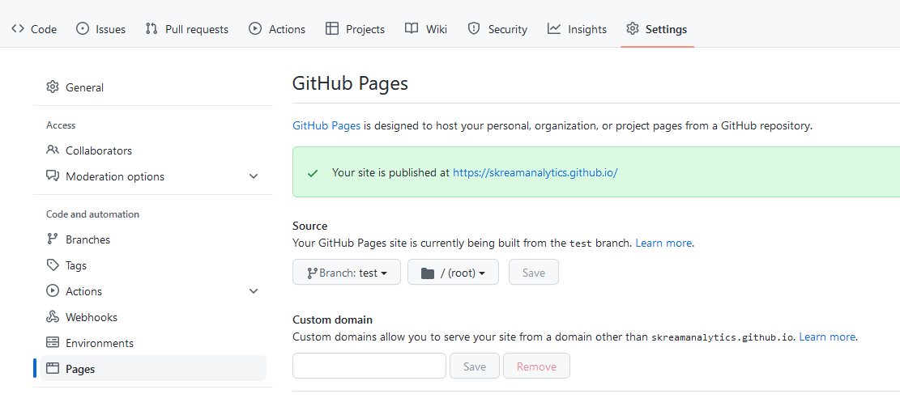

You then have to answer some questions which can also be left blank. Once the basic project
has been created you’ll want to update the config.py file and add your content.
Content
Posts are written in the markup language reStructuredText. If, like me, you have posts already written in markdown then
you can install and use Pandoc to convert them. I found this mostly did a good job except for inline mathematical
notation. It converted all of my mathematical experessions to their own code blocks so I had
to manually fix them using :math:<expression>. I also had to redo my image notation which was fairly straightforward.
Note that you need to give image width and there are other options arguments such as ‘align’.
.. image:: <filepath>
:width: 200
The header of the files were removed and I had to add them back in. It requires at the minmum a date and this date
helps order the posts. If you don’t have a title in your file then you will also need to add a title to the header.
.. post:: December 10, 2021
:author: Jane Doe
I found that using hyphens in post names was problematic so I had to rename a couple of post files too.
The default project creates a blog post in the base directory but in the interest of keeping tidy, I included a ‘posts’ directory to store
the posts. You don’t need to change any configurations for this, the files are automatically found. In the ‘_static’ folder I created a
subdirectory called ‘images’. This needs to be added in the config.py file so I ended up with the below.
html_static_path = ["_static", "_static/images"]
You also need to update the ‘about.rst’ file and you may wish to update the ‘index.rst’ file. On the homepage I wanted all of the blog posts
listed so I removed the default value of 5. Also, I didn’t want the date listed so set the format just to title. See below.
.. postlist::
:format: {title}
:excerpts:
Config
Beyond the html_static_path modification above I also made some other changes to the config.py file. If you are hosting on GitHub pages
you must include the below line:
github_pages = '<username>'
So in my case it’s:
github_pages = 'skreamanalytics'
This is something that is not clear in the Ablog documentation
which tells you to “Set github_pages configuration variable in conf.py file.”. This is reason that I created this blog post in the first place.
I ended up looking up someone elses GitHub hosted Ablog blog to find this out.
In the config.py I also removed the ‘tagcloud.html’, and ‘archives.html’ from html_sidebars to clean up the sidebar.
Build and Serve
Once you’ve got your config.py set up and some content you can build your site using the below command in the working directory of your
project.
Follow that up with the serve command and you can view your site.
In order to clean out old files you can also run the below with an optional argument of ‘-D’ for a deep clean.
If you still find that the local version of your blog is not reflecting your changes then try clearing the cache in your browser.
Git Hosting
In GitHub, I have a repository containing my build files and a repository containing just the website pages.
In order to host the blog on Git Hub pages then you need to create a public repository called username.github.io. Yes the repostiory
will be https://github.com/username/username.github.io). If you want to host using a private repository then you’ll need a paid subscription
to GitHub. You also need to set the Source branch. I didn’t originally do this and then was left wondering why my site wouldn’t display. To
do this navigate to the Settings then Pages per below. You can also use a custom domain.

Since you are hosting on GitHub pages you also need to add a .nojekyll file.
Once complete, you need to push the files in the _webiste folder from you project into the username.github.io repository. Your website
will now be hosted at https://username.github.io/. It may take up to 20 minutes to update but I’ve found it’s much quicker than that.
It’s also much quicker than my GitLab hosted site.
There is a deployment command that can be used to deploy the site to GitHub but I do it manually as I figure it’s one less thing to
configure and break.
{kind=link}